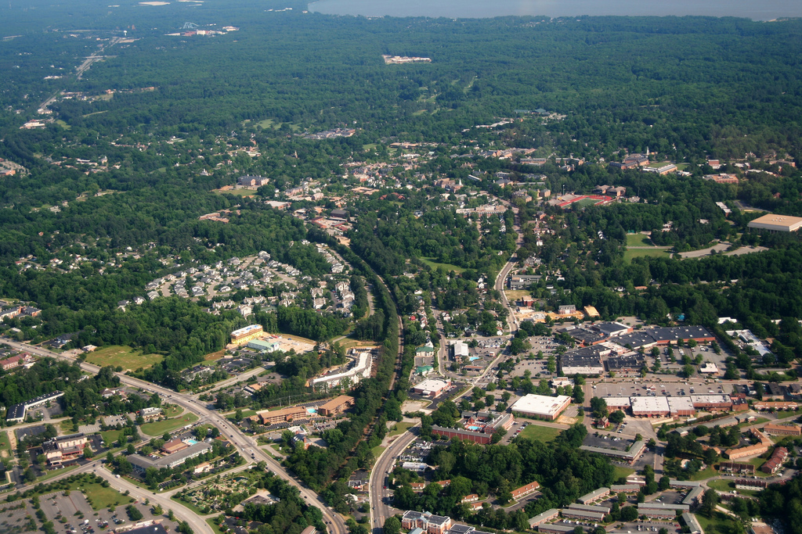

Hello
I'm @tmcw
@Tom MacWright
MAPS
MapBox TileMill

coding
TileMill
github.com/tmcw /mapbox /developmentseed
"the future"
is this it?
NO
this is the stone age
GIS = art + science
GIS = art + science + bull$#*(
GIS software is obsessed with bull$#*(
File formats. Lat/lon or lon/lat? Progress bars. Configuration.
Projections?
art

github.com/ajashton
Not about ESRI

or open source
be less tolerant
do open source
(or closed)
software should perfect itself
and fade from view